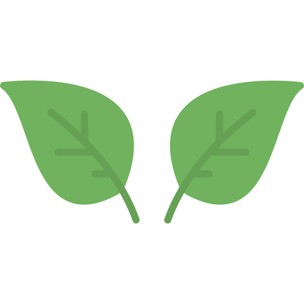
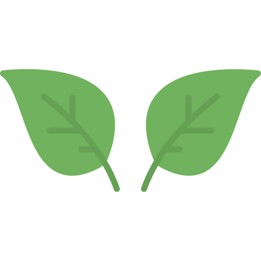

Creación de entornos inspiradores.
Colaboración y trabajo Interdisciplinario.
Estrategias Educativas.
Misiones lidera la integración de la inteligencia artificial en la educación.
Leer másLucas Ditz-Diel seleccionado para "Embajador Docente de América Latina".
Leer másEl proyecto misionero creado por el estudiante Tiago Rodríguez, fue elegido para competir en la final nacional del concurso .
Leer másEl ministro de Educación Ramiro Aranda participó del taller Regional del BID en Brasil
Leer másConocé a nuestro amiguito tucán Ova, embajador de la innovación y la alegría de nuestra escuela.
 


18 de Agosto, 2025

19 de Agosto, 2025
20 de Agosto, 2025
21 de Agosto, 2025

22 de Agosto, 2025

22 de Agosto, 2025
Entorno dinámico y acogedor que promueve la autonomía y la curiosidad de los estudiantes, apartir de:
Diseñar propuestas áulicas que despiertan la curiosidad y el deseo de aprender.
Crear espacios amenos y flexibles que promueven el trabajo en equipo.
Fomentar el intercambio de ideas a través de instancias de debate y reflexión.

Compartimos palabras del Ex Director de la Escuela Secundaria de Innovación de Misiones, actual Ministro de Educación Ciencia y Tecnología de la Provincia de Misiones en el marco del Congreso Internacional de Robótica Educativa en la ciudad de Córdoba 2023.
Bachillerato orientado en la Provincia de Misiones, que en su práctica busca romper con los paradigmas tradicionales de la escuela.
Pensando en un docente comprometido con la comunidad y el trabajo colaborativo.
Pensando en un estudiante activo y protagonista, que toma decisiones sobre su trayectoria.
Una escuela que utiliza la tecnología como herramienta y construye su propia identidad, caracterizando por el trabajo con las familias y otras instituciones.
Posibilitar un ámbito de aprendizaje óptimo donde los estudiantes se identifiquen con la escuela. Que sean protagonistas de su trayectoria y encuentren en la institución un espacio donde querer estar. Para que logren ser mejores estudiantes y convertirse en mejores personas.

En la Economía del Conocimiento, la creatividad y la innovación son la clave de la evolución humana. Estamos experimentando la riqueza del potencial que tenemos, generando ideas disruptivas y significativas.

La formación de profesionales tiene como centralidad fortalecer la integración de saberes, organizando el aprendizaje de un modo holístico a partir de la construcción de conocimientos, competencias y habilidades en los desafíos que implica la Educación Disruptiva en el nivel superior.
La innovación no implica solo adoptar una metodología novedosa o utilizar nuevas herramientas, es necesario revisar los fundamentos y realizar cambios en los procesos de enseñanza-aprendizaje.

Promover un modelo educativo, público y de calidad, atendiendo los contenidos del Nivel Secundario.
Promover la formación integral de la persona, su identidad y autoestima, a traves de un modelo pedagógico que rompa los paradigmas tradicionales.
Formar a los estudiantes, en autonomía y responsabilidad sobre su trayectoria, incorporando el uso responsable de tecnologías que facilite la integración de saberes.
Fomentar el pensamiento científico con el desarrollo de tecnologías educativas y todo aquello que sirva de soporte a la mejora permanente del servicio educativo.